第七章 图｜数据结构系统化图解笔记
学习路线： 图有什么元素 → 如何存储 → 如何访问全部顶点 → 如何选出最省成本的连通方案 → 如何找最短路 → 如何安排先后顺序 → 如何计算项目最短工期。
7.1 图的定义和术语
7.1.1 图的数学定义与有向/无向图
图由顶点集合与边（弧）集合组成：
- 顶点（vertex）：被连接的对象，例如城市、课程或网络设备。
- 无向边（edge）：无方向的连接，记为
，这里 和 代表同一条边。 - 有向弧（arc）：从弧尾
指向弧头 ，记为 。通常 不等于 。 - 网（network）：边或弧附有权值的图；权值可以表示距离、费用、耗时等。
课件用
图：无向边没有箭头，关系双向
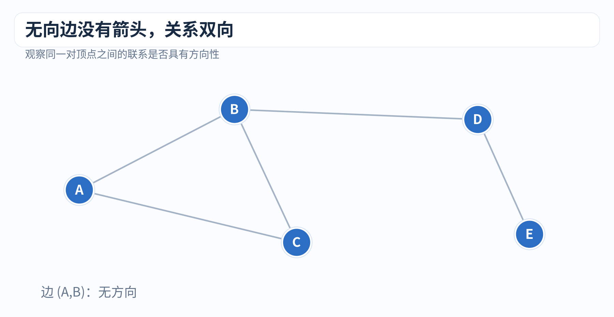
图：有向弧具有弧尾和弧头
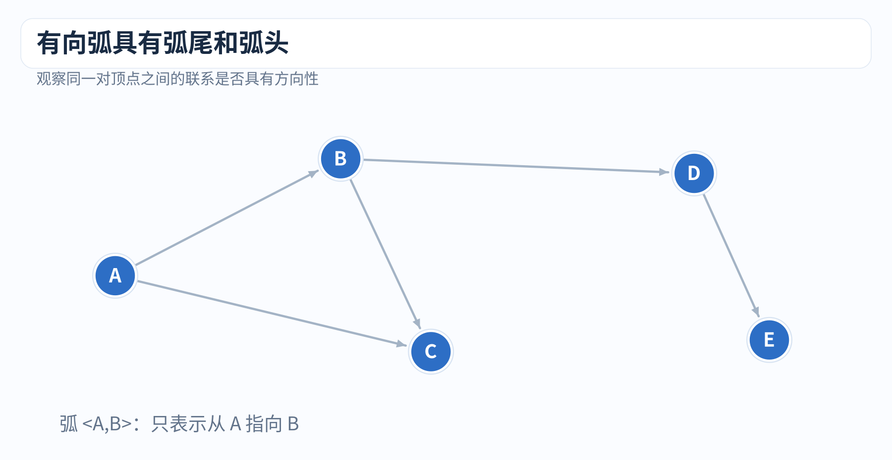
图：带权图的权值标注
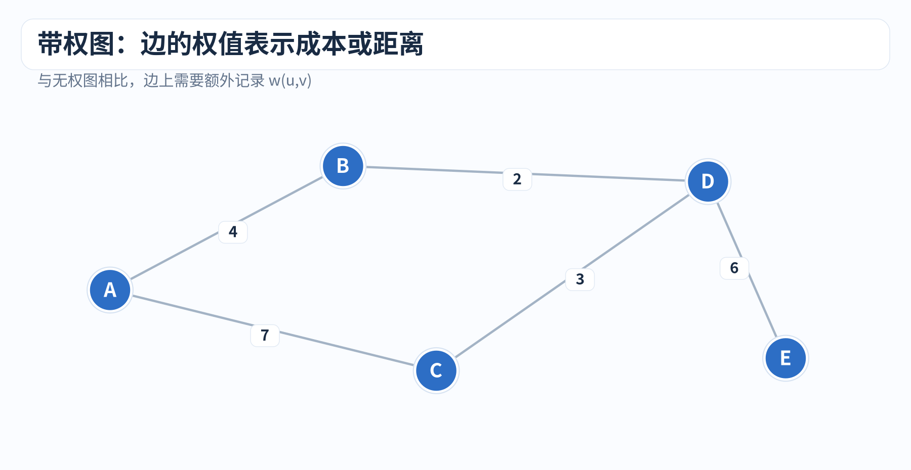
7.1.2 子图、完全图、稀疏图与稠密图
若
在不允许自环、平行边的简单图中：
个顶点的无向完全图边数为 。 个顶点的有向完全图弧数为 （两个方向分别计数）。 - 稀疏与稠密强调边数相对
的多少；课件以 等方式介绍稀疏图，这可理解为教材的粗略判别阈值，不是所有算法教材统一采用的严格定义。
图：原图与子图的关系
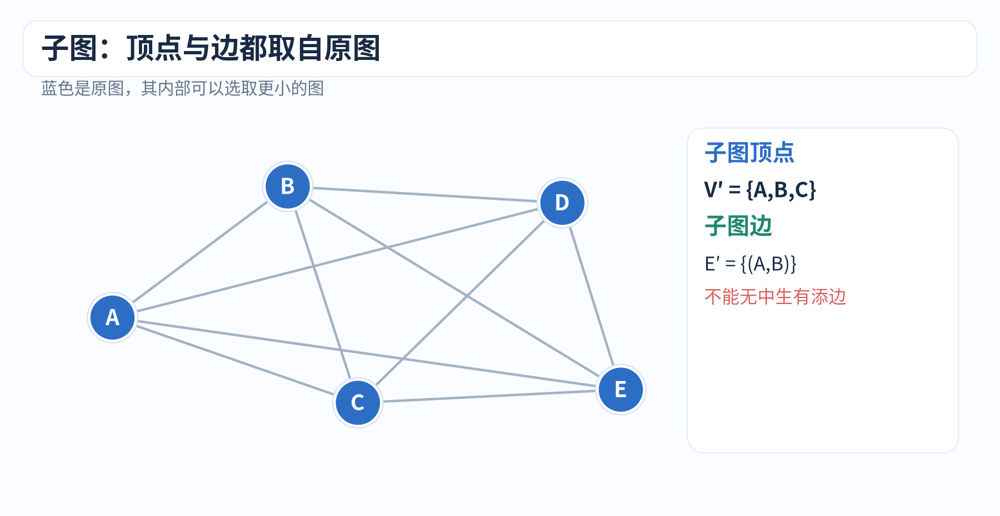
图：无向完全图 K5
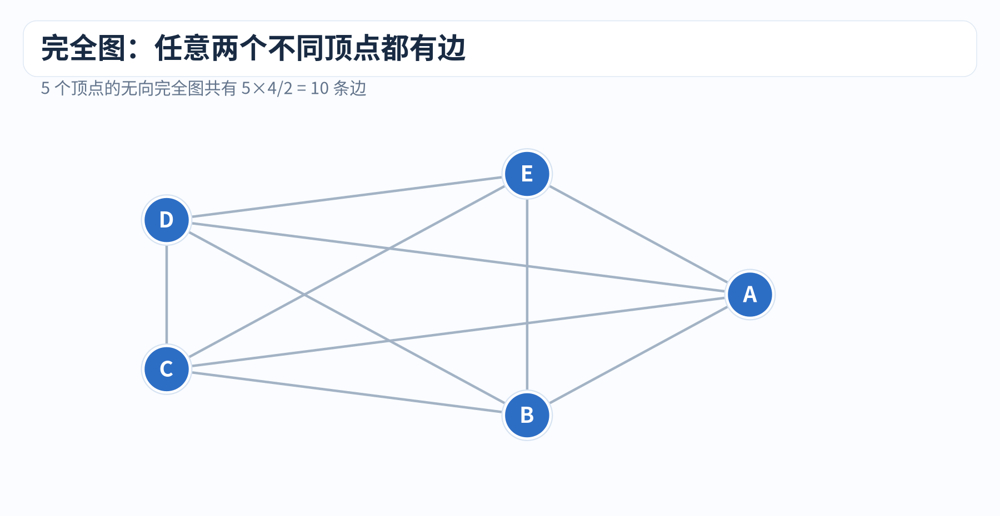
7.1.3 邻接、度、入度与出度
无向图中，与顶点
无向图中
图：有向图的入度与出度
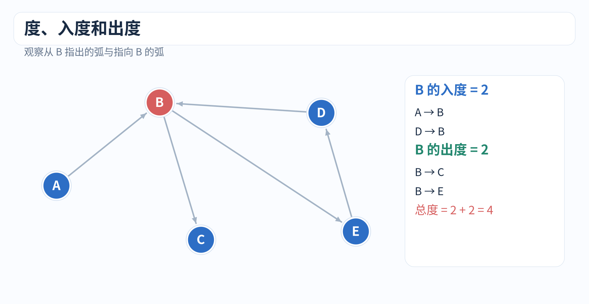
7.1.4 路径、回路与长度
路径是相邻顶点依次连接而成的序列。讲义以“所经过的边数”定义路径长度；若图带权，则路径的总代价需要将经过的边权相加，两个概念不可混同。
- 简单路径：除非另有定义，顶点不重复的路径。
- 回路：起点与终点相同的路径；简单回路仅首尾允许重合，中间顶点不重复。
- 对有向图，路径必须按弧的箭头方向走。
图：简单路径与有向回路
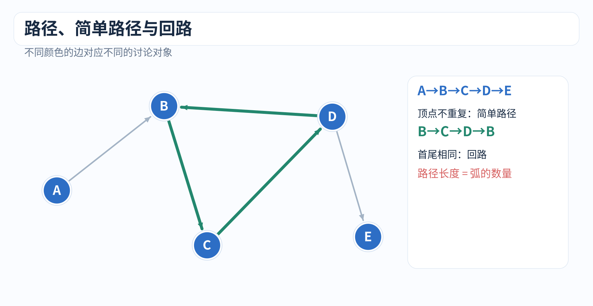
7.1.5 连通图、强连通图、分量
- 无向连通图：任意两顶点间都有路径；连通分量是极大连通子图。
- 有向强连通图：任意两顶点互相可经有向路径到达；强连通分量是极大强连通子图。
- “有向图忽略箭头后连通”和“强连通”不是一个概念。
图：非连通无向图的三个连通分量
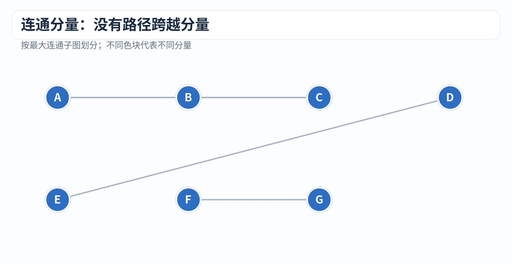
图：有向图中的强连通分量
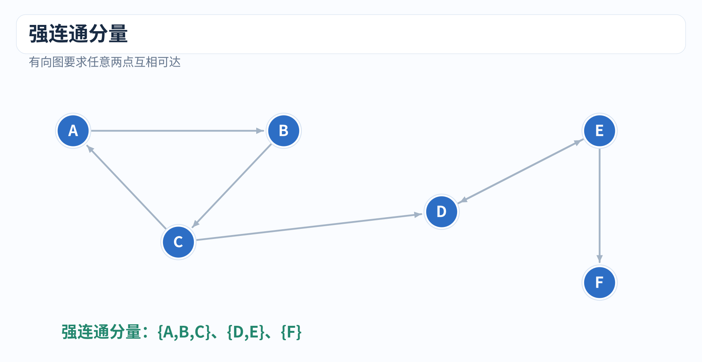
7.1.6 生成树、生成森林与图 ADT
连通无向图的生成树保留所有
图：从连通图抽取一棵生成树
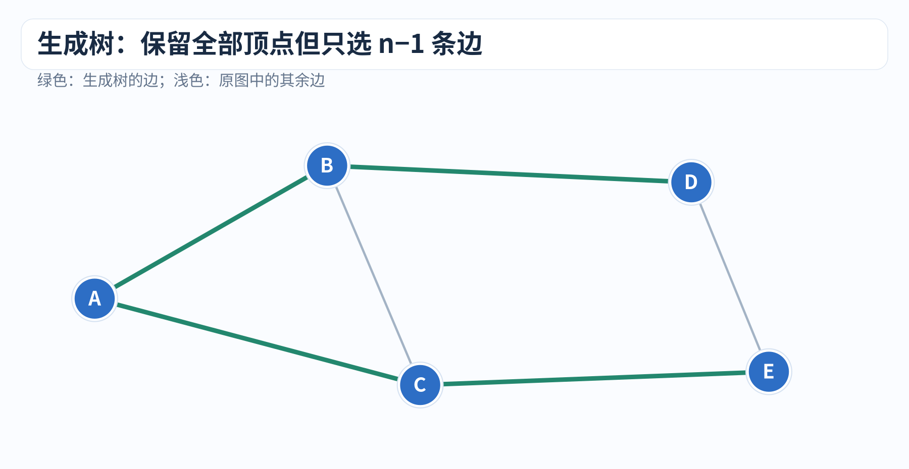
7.2 图的存储表示
同一张图可以有多种存储方式，数据结构的选择会显著影响空间消耗与查询/遍历效率。课件依次介绍邻接矩阵、邻接表、逆邻接表和有向图的十字链表。
7.2.1 邻接矩阵：用二维数组表示边
设顶点按
- 无向图：
，矩阵对称。 - 有向图：第
行的 1 的个数为 的出度，第 列的 1 的个数为入度。 - 带权图：存在边记相应权值
；不存在边常用 或足够大的哨兵值（具体取值应与算法约定一致）；最短路径算法常把对角线初始化为 0。 - 空间复杂度
；查看任意两个顶点是否相邻为 ；扫描某个顶点的全部邻接点为 。
图：无向图与对称邻接矩阵
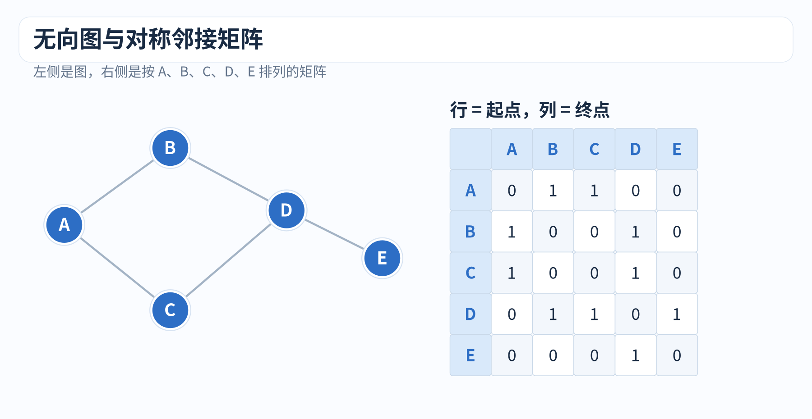
图：无向图矩阵关于主对角线对称
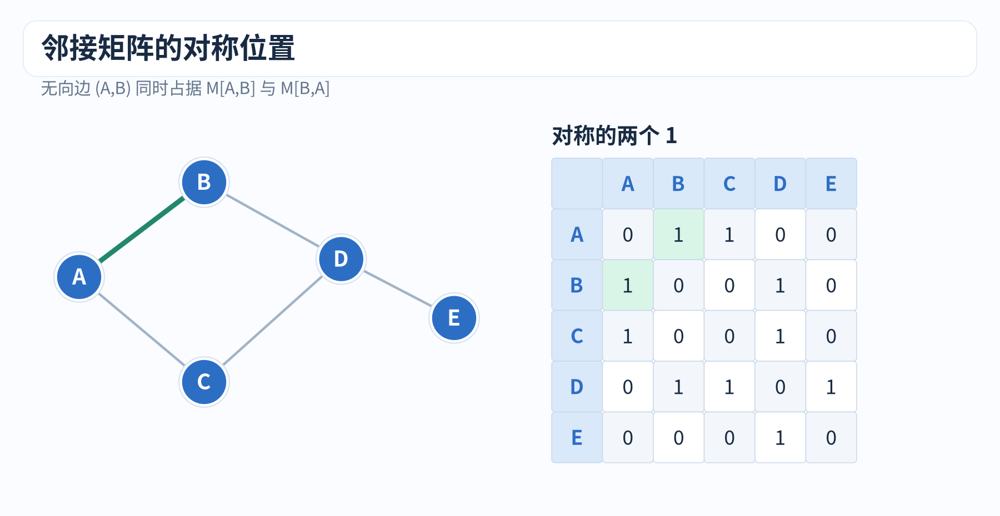
图：有向图的邻接矩阵
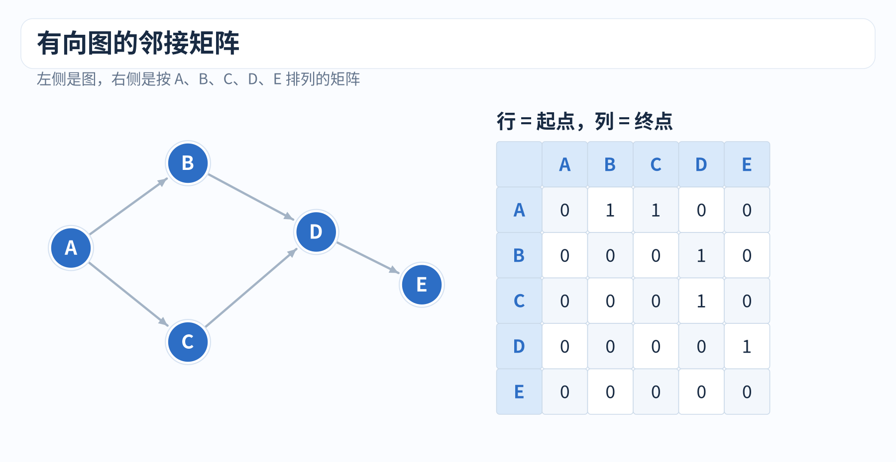
图：有向图按行求出度、按列求入度
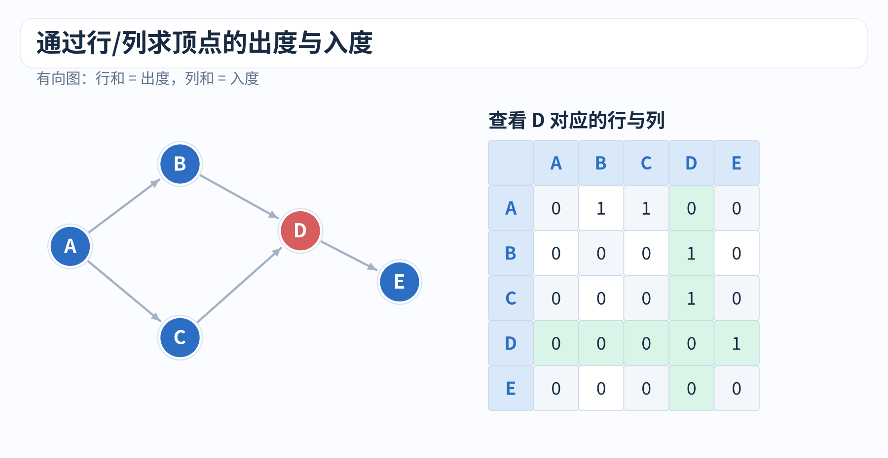
图：带权网的矩阵：权值和无穷大
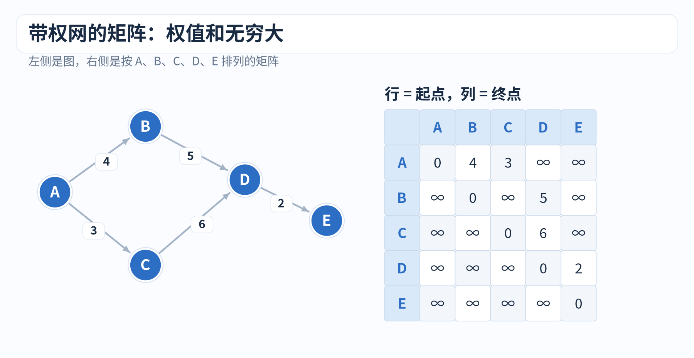
用标准 C++ 容器可以直接建立简单邻接矩阵：
int n = 5; // 顶点个数
std::vector<std::vector<int>> matrix(n, std::vector<int>(n, 0)); // 创建 n×n 的零矩阵
matrix[0][1] = 1; // 存入从顶点 0 到顶点 1 的弧
matrix[1][0] = 1; // 若是无向图，同时写入反向位置
这段代码片段需要包含 <vector>。课堂 PPT 使用固定规模的二维数组和 GraphKind 结构描述图；这里以常用的 std::vector 展示相同的结构含义，便于理解与测试。
7.2.2 邻接表：每个顶点维护一条链/列表
邻接表将顶点表和各顶点的邻接点表结合起来。经典教材的弧结点具有 adjvex（邻接点索引）、info（权值等信息）与 nextarc（下一弧结点指针），顶点结点具有 data 与 firstarc。在现代 C++ 中，可先用二维动态数组理解这种“按顶点分类存储”的思想。
- 无向图：每条边通常在两个端点的链中分别存一次，表结点总数约为
。 - 有向图：每条弧只进入弧尾顶点的链中，表结点总数为
；这条链长度对应出度。 - 表空间通常为
；遍历所有邻接边很方便；但判定任意指定两点是否直接相邻，可能需要扫描一整条链。
图：无向图与邻接表存储
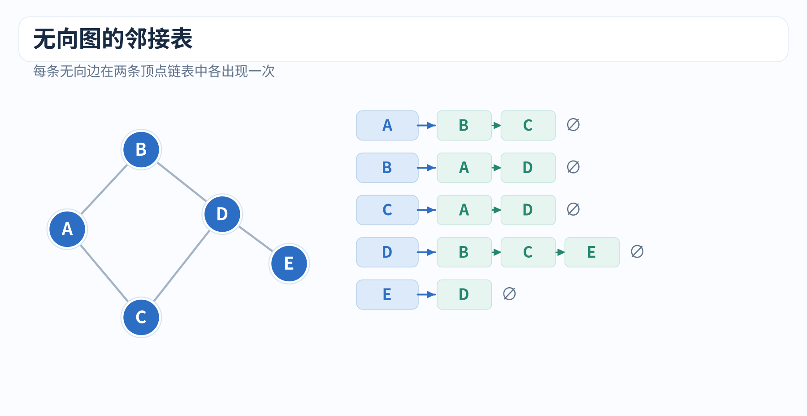
图：有向图与邻接表
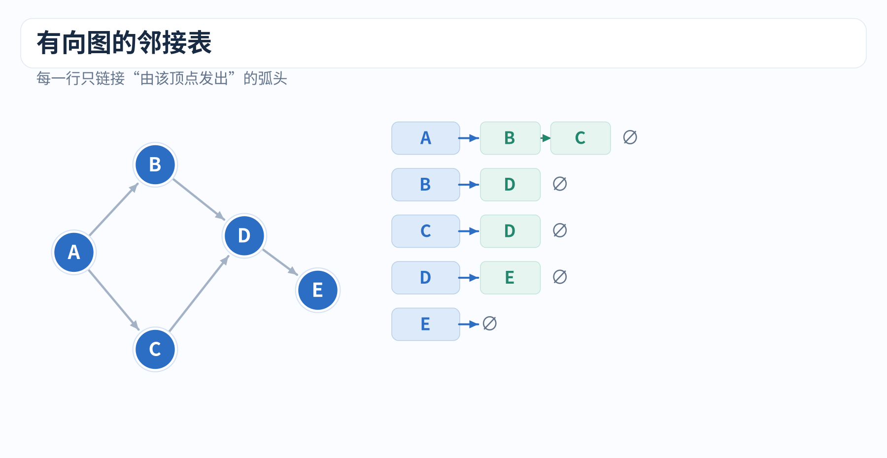
图：邻接表表头与弧结点的指针关系
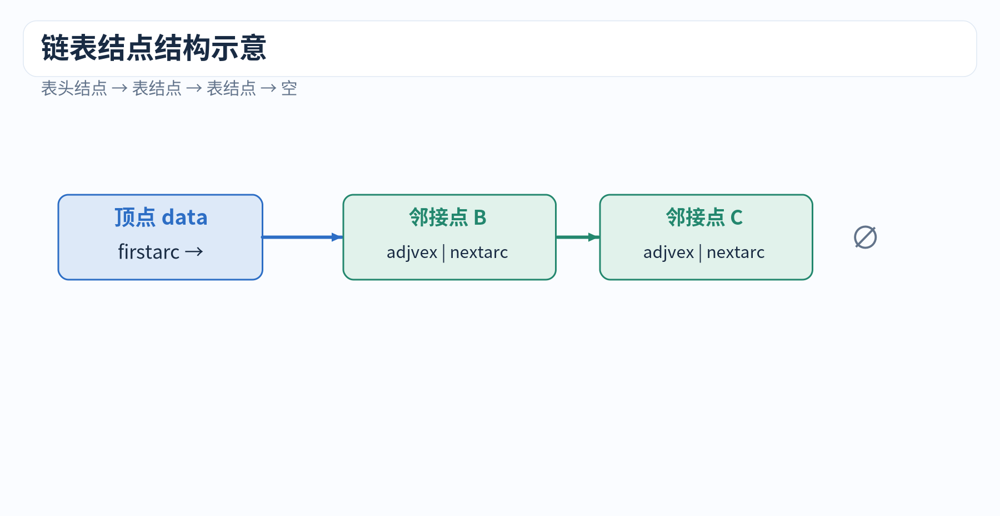
int n = 5; // 顶点数
std::vector<std::vector<int>> adj(n); // 每个顶点有一份邻接点序列
adj[0].push_back(1); // 添加 0→1
adj[1].push_back(0); // 无向图还需要添加 1→0
7.2.3 逆邻接表：方便枚举入弧
普通有向邻接表按照弧尾保存后继；逆邻接表按照弧头保存前驱。若目标是反复查询“谁指向顶点
图：有向图与逆邻接表
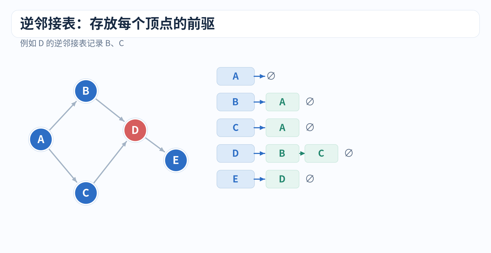
7.2.4 十字链表：一条弧进入两条链
十字链表将邻接表与逆邻接表的优点结合。每个弧结点记录：tailvex、headvex、tlink（指向下一条同弧尾的弧）与 hlink（指向下一条同弧头的弧），还可保存权值信息；每个顶点结点维护 firstout 与 firstin 两个入口。
图：十字链表弧结点的四个关键域
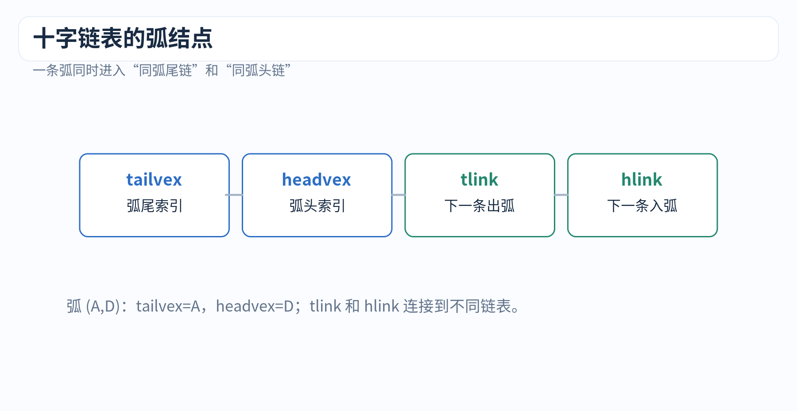
图：十字链表顶点结点的双入口
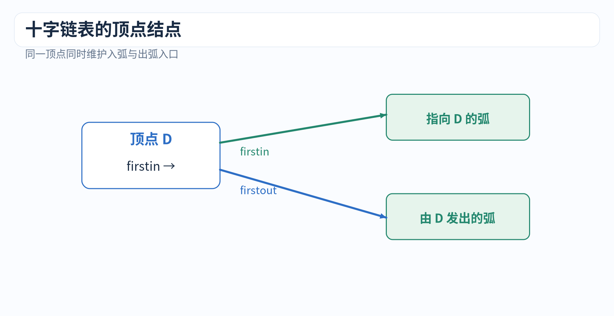
图：十字链表能够同时枚举入弧和出弧
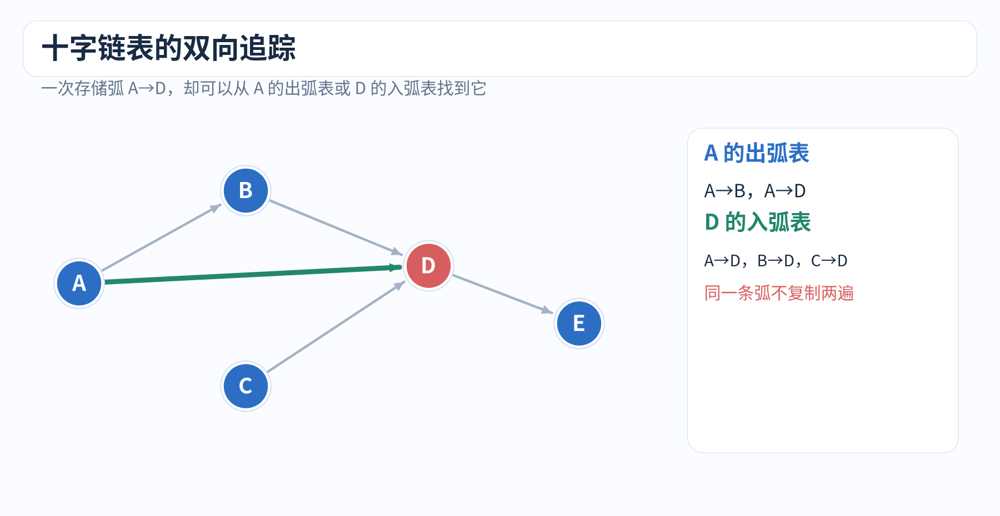
7.2.5 三类结构如何选择
| 结构 | 主要存储量 | 查询指定两点是否相邻 | 访问所有出邻接点 | 典型用途 |
|---|---|---|---|---|
| 邻接矩阵 | 顶点数较小、较稠密的图 | |||
| 邻接表 | 大部分稀疏图、DFS/BFS | |||
| 逆邻接表 | 与邻接表类似 | 直接访问前驱 | 计算入度、反向搜索 | |
| 十字链表 | 需沿相关链查找 | 入弧/出弧均方便 | 需要双向维护的有向图 |
上述邻接表复杂度使用简单邻接序列作近似，若存在平行边或额外辅助结构，应按具体实现调整。
图：稀疏图与稠密图的存储适配
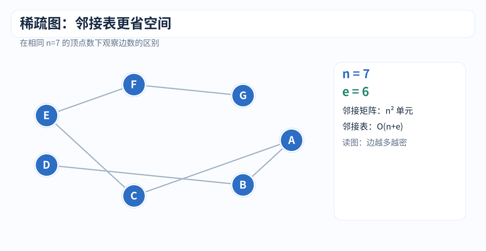
图：稠密图与稀疏图的存储适配
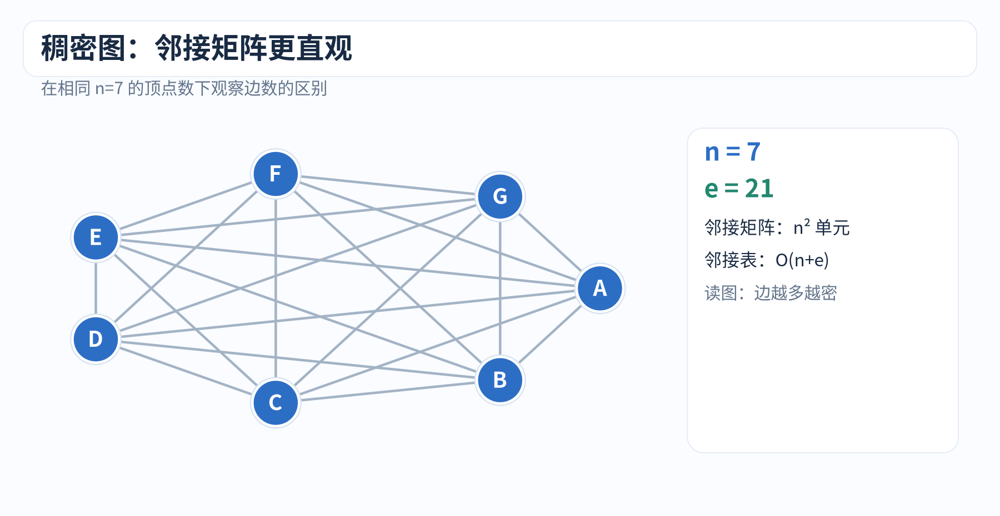
7.3 图的遍历
图的遍历是从指定顶点出发访问可达顶点，并在需要时遍历其他连通分量，使每个顶点只处理一次的过程。与树不同，图可能有回路，必须使用 visited[] 防止反复访问。课件中的 DFS 和 BFS 都可用于整图遍历、路径判断和构造搜索生成树。
图：图遍历中的访问标记
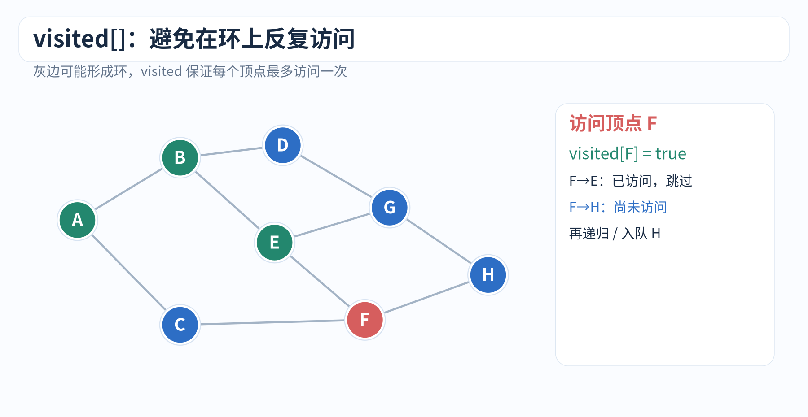
7.3.1 深度优先搜索 DFS
DFS 的核心过程是：访问当前顶点 → 递归进入第一个尚未访问的邻点 → 走到底后回溯 → 继续尚未搜索的分支。典型实现依赖递归调用栈，也可以显式使用栈。
void dfs(int u, const std::vector<std::vector<int>>& adj,
std::vector<bool>& visited, std::vector<int>& order) {
visited[u] = true; // 访问时立即标记，避免重复递归
order.push_back(u); // 记录访问顺序
for (int v : adj[u]) { // 按邻接表的顺序检查邻接点
if (!visited[v]) { // 只进入没有访问过的顶点
dfs(v, adj, visited, order); // 深入后继分支
}
}
}
调用前应准备长度为 false 的 visited，并把 start 传给 dfs(start, adj, visited, order)。若要遍历非连通图，外层还需从每个未访问顶点重新启动 DFS。
图：一次 DFS 得到的生成树
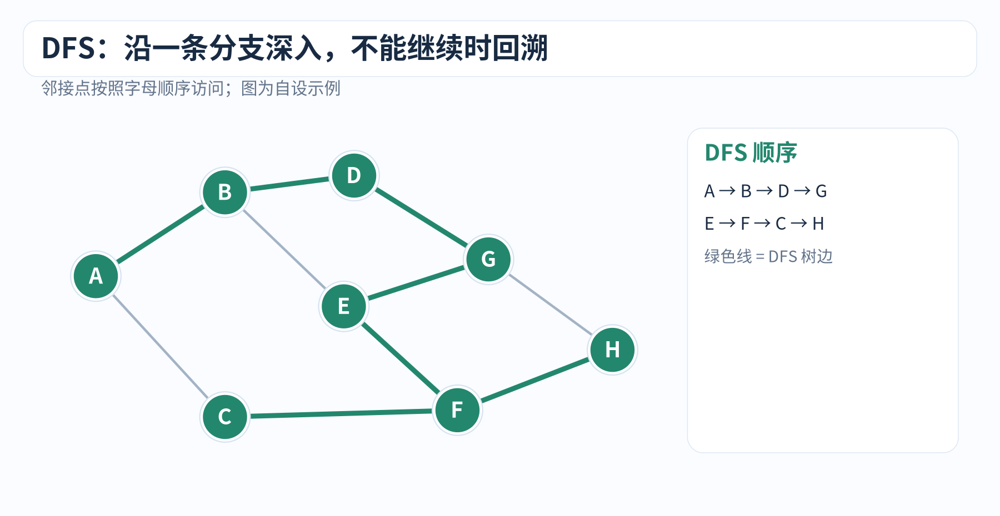
DFS 演示第 1 步：访问 A
图：DFS 第 1 步访问 A
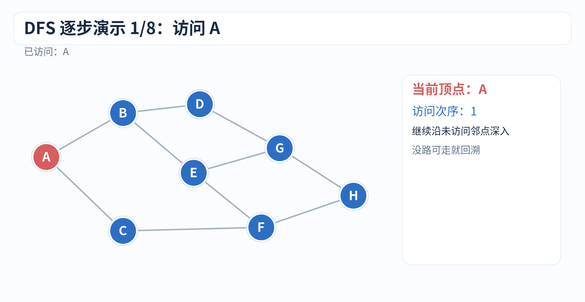
先访问起点 A 并标记，寻找字母序最前的未访问邻点。
DFS 演示第 2 步：访问 B
图：DFS 第 2 步访问 B
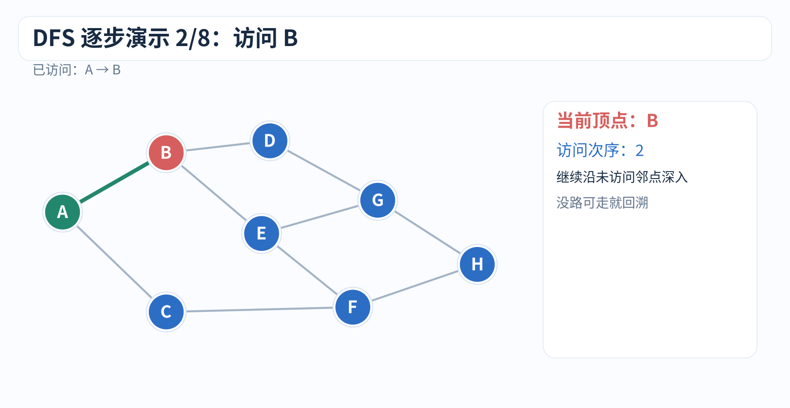
沿当前顶点尚未访问的邻接点继续深入；若没有可走的邻接点就返回上一层。
DFS 演示第 3 步：访问 D
图：DFS 第 3 步访问 D
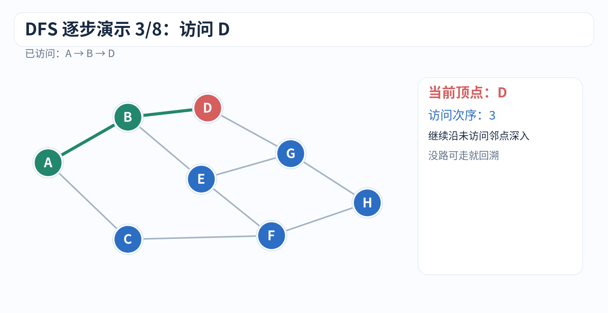
沿当前顶点尚未访问的邻接点继续深入；若没有可走的邻接点就返回上一层。
DFS 演示第 4 步：访问 G
图：DFS 第 4 步访问 G
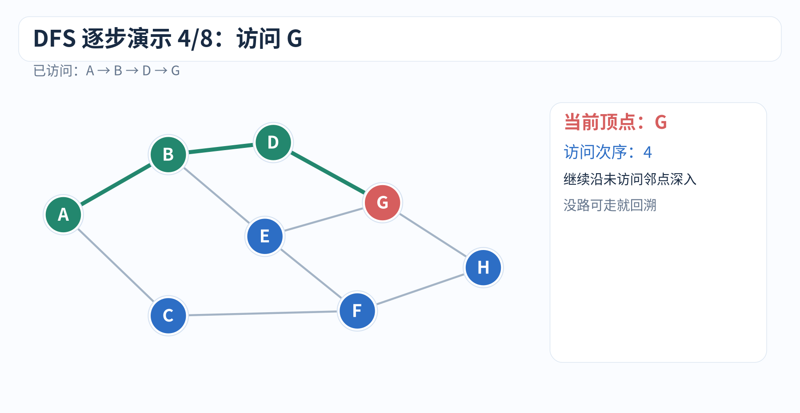
当前分支进入更深一层；后续遇到已访问顶点时必须跳过，避免沿环重复搜索。
DFS 演示第 5 步：访问 E
图：DFS 第 5 步访问 E
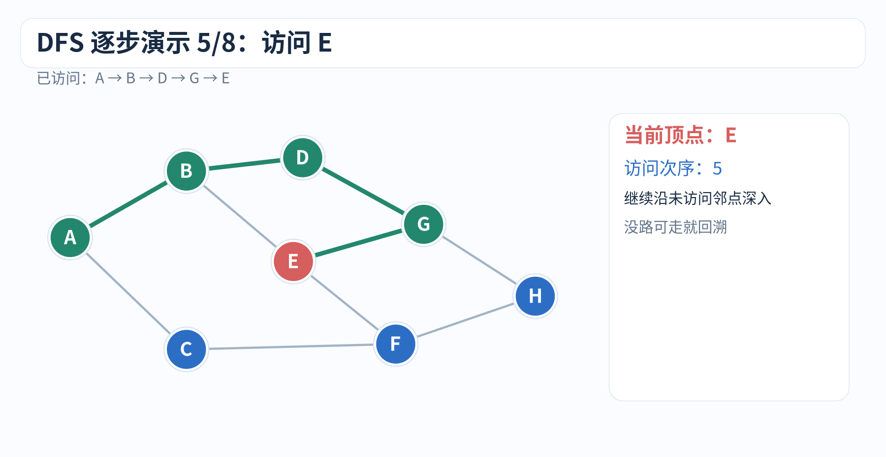
沿当前顶点尚未访问的邻接点继续深入；若没有可走的邻接点就返回上一层。
DFS 演示第 6 步：访问 F
图：DFS 第 6 步访问 F
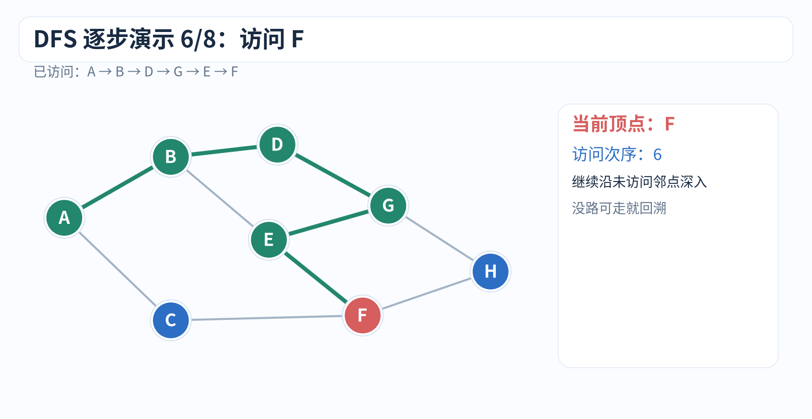
沿当前顶点尚未访问的邻接点继续深入；若没有可走的邻接点就返回上一层。
DFS 演示第 7 步：访问 C
图：DFS 第 7 步访问 C
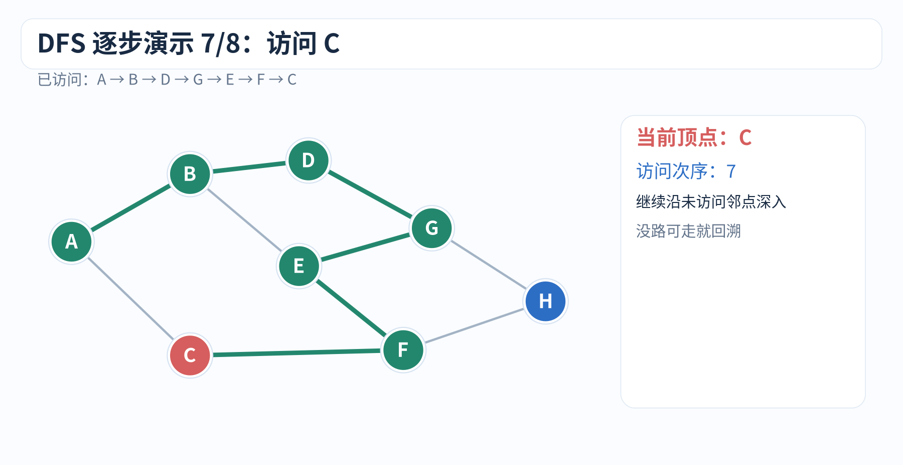
当前分支进入更深一层；后续遇到已访问顶点时必须跳过，避免沿环重复搜索。
DFS 演示第 8 步：访问 H
图：DFS 第 8 步访问 H
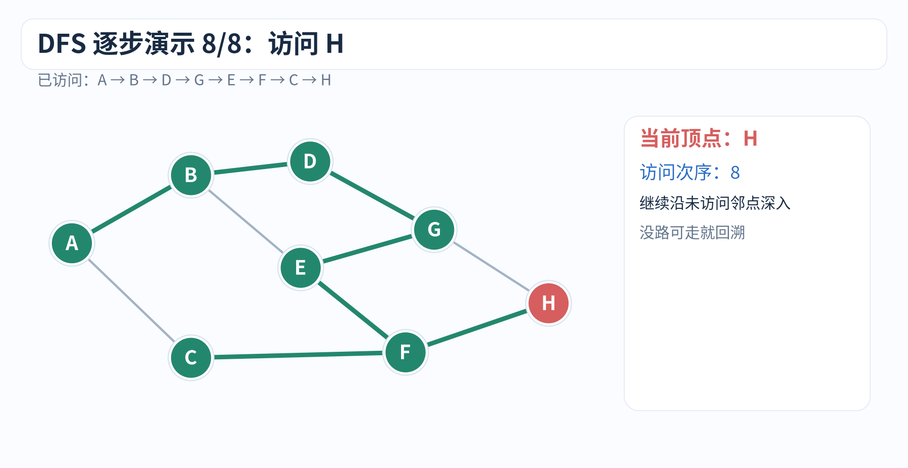
最后访问 H，全部顶点已访问；回溯会结束尚未返回的函数调用。
DFS 回溯、非连通图与复杂度
DFS 不是沿图中的某条固定“回程路线”反向移动：递归返回发生在函数调用关系中；只有为了展示搜索树才会画出回溯箭头。在邻接表上遍历一张图的复杂度为
图：DFS 递归与回溯
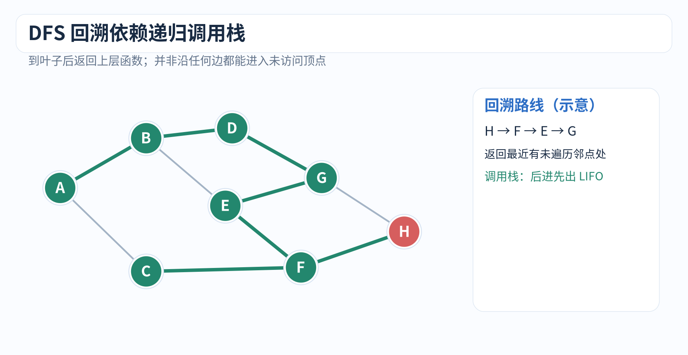
图：在非连通图上继续遍历其他分量
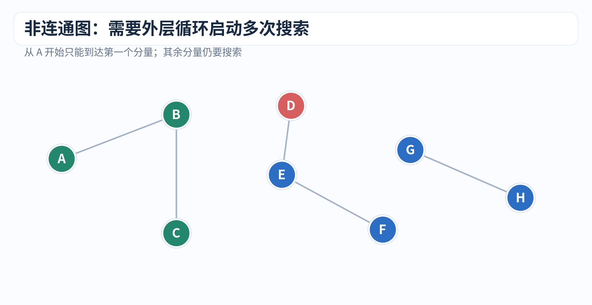
7.3.2 广度优先搜索 BFS
BFS 按最少边数形成的层次依次访问顶点。它不是深入一条分支，而是先处理所有距离起点 1 条边的顶点，再处理 2 条边的顶点……因此需要队列保存已经发现但尚未扩展的顶点。
关键时机：在顶点第一次入队时就将它标记为已访问，而不是出队时才标记；否则同一顶点可能被重复加入队列。
void bfs(int start, const std::vector<std::vector<int>>& adj,
std::vector<int>& order, std::vector<int>& parent) {
int n = static_cast<int>(adj.size()); // 顶点数量
std::vector<bool> visited(n, false); // 访问标记
std::queue<int> q; // 广度优先队列
parent.assign(n, -1); // -1 表示暂时没有前驱
visited[start] = true; // 起点第一次入队前标记
q.push(start); // 起点入队
while (!q.empty()) { // 队列非空时继续扩展
int u = q.front(); // 获取待处理的队头
q.pop(); // 将队头出队
order.push_back(u); // 记录出队访问顺序
for (int v : adj[u]) { // 枚举 u 的邻接点
if (!visited[v]) { // 忽略已发现的顶点
visited[v] = true; // 立即标记，防止重复入队
parent[v] = u; // 记录第一次发现 v 的前驱
q.push(v); // 新顶点排到队尾
}
}
}
}
调用上面函数需要包含 <vector> 和 <queue>。注意本例把“访问结果”定义为出队时记录的顺序，但图中 visited 表示的是已发现（入队）的顶点；两者在某些中间状态并不完全相同。
图：BFS 按最少边数分层
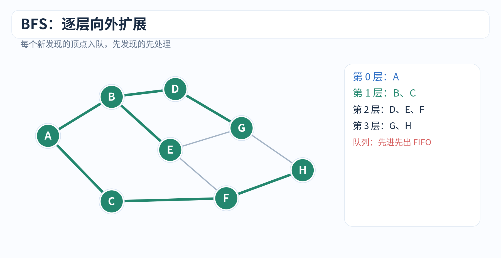
BFS 演示第 1 个状态：起点入队
图：BFS 第 1 个状态
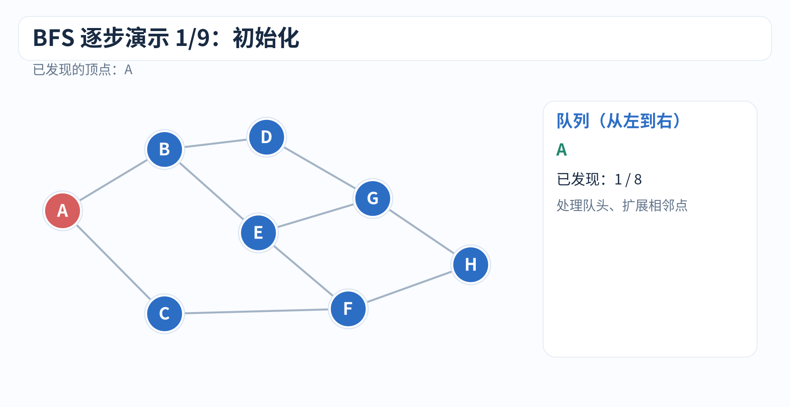
当前待处理队列：A。新发现的结点会标记后进入队尾。
BFS 演示第 2 个状态：处理 A
图：BFS 第 2 个状态
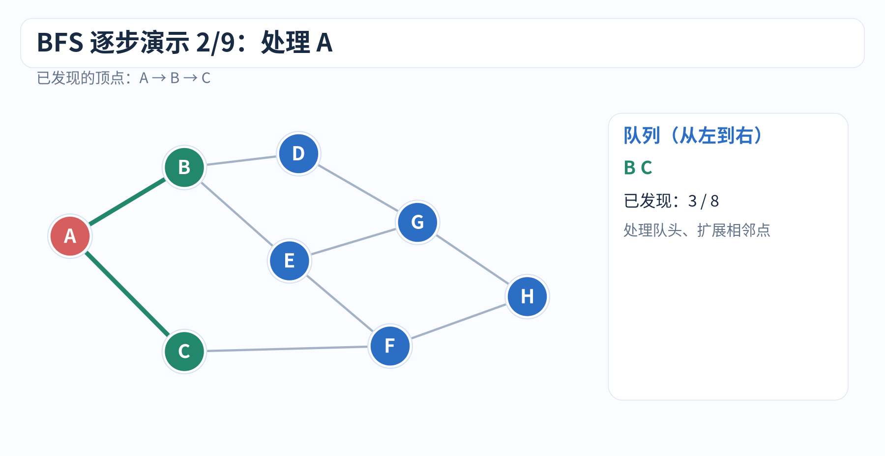
当前待处理队列：B、C。新发现的结点会标记后进入队尾。
BFS 演示第 3 个状态：处理 B
图：BFS 第 3 个状态
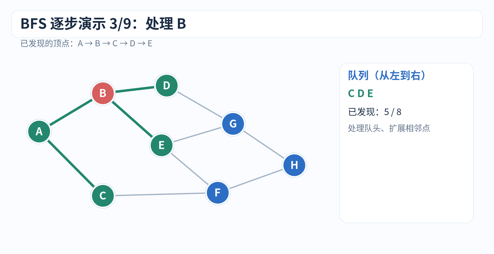
当前待处理队列：C、D、E。新发现的结点会标记后进入队尾。
BFS 演示第 4 个状态：处理 C
图：BFS 第 4 个状态
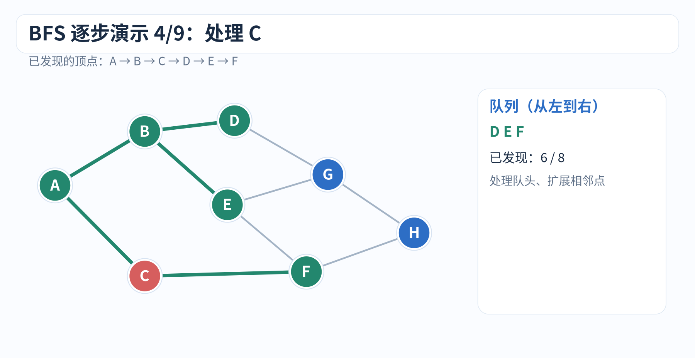
当前待处理队列：D、E、F。新发现的结点会标记后进入队尾。
BFS 演示第 5 个状态：处理 D
图：BFS 第 5 个状态
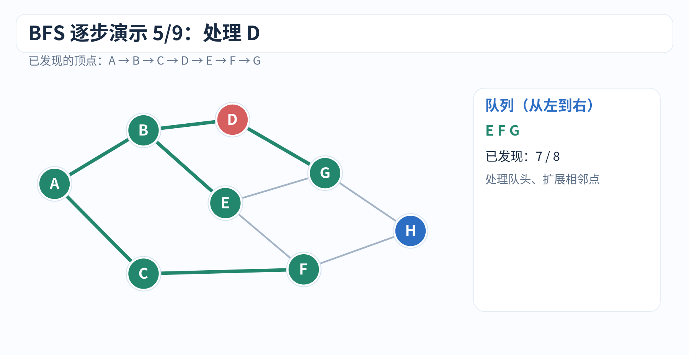
当前待处理队列：E、F、G。新发现的结点会标记后进入队尾。
BFS 演示第 6 个状态：处理 E
图：BFS 第 6 个状态
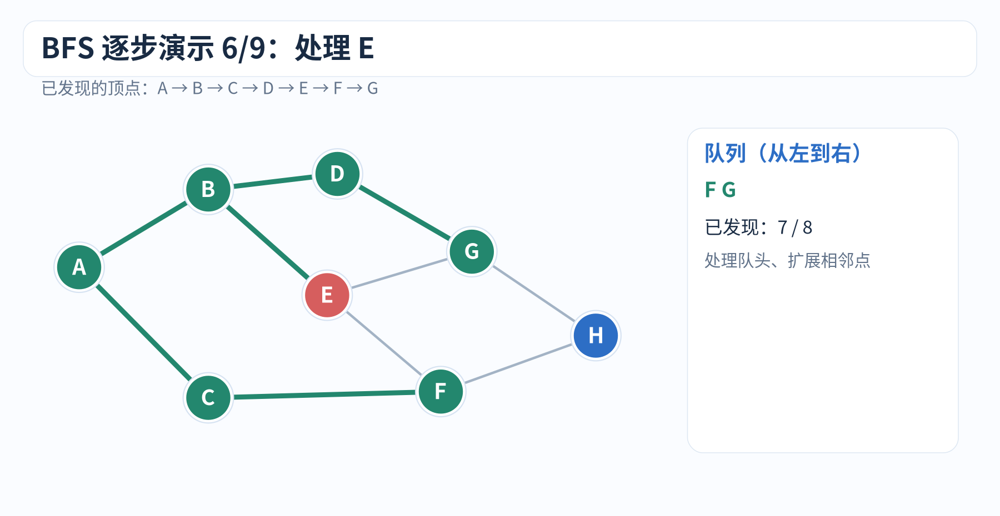
当前待处理队列：F、G。新发现的结点会标记后进入队尾。
BFS 演示第 7 个状态：处理 F
图：BFS 第 7 个状态
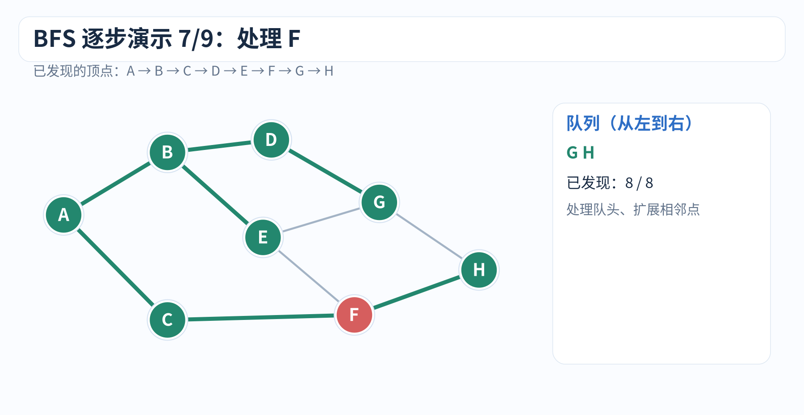
当前待处理队列：G、H。新发现的结点会标记后进入队尾。
BFS 演示第 8 个状态：处理 G
图：BFS 第 8 个状态
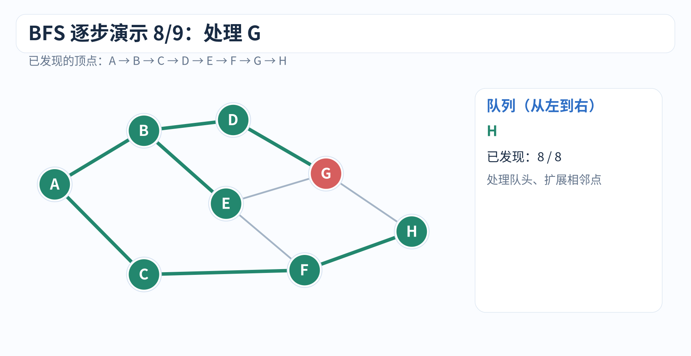
当前待处理队列：H。新发现的结点会标记后进入队尾。
BFS 演示第 9 个状态：处理 H
图：BFS 第 9 个状态
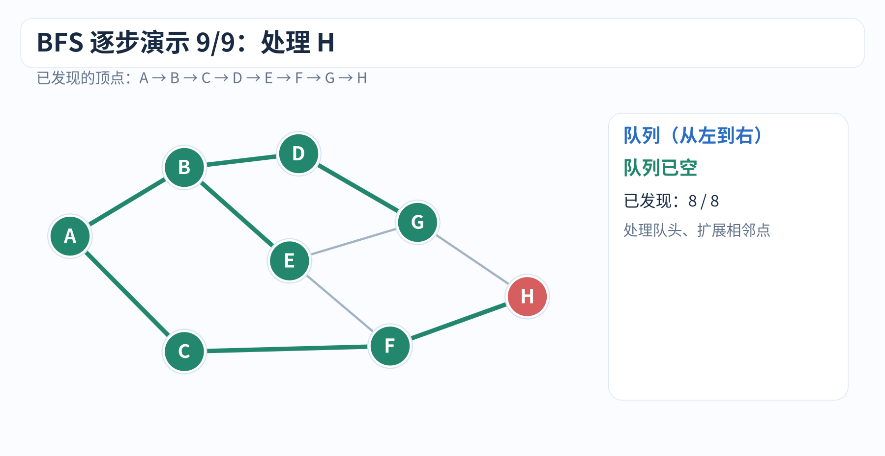
当前待处理队列：空。队列清空，搜索结束。
图：BFS 的入队和 visited 时机
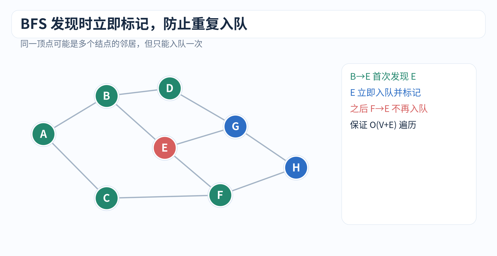
图：用 BFS 的前驱指针恢复最短路径
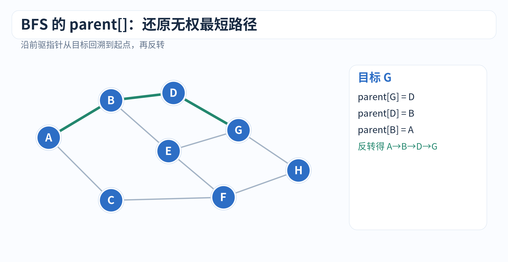
图：同一个图的 DFS 与 BFS 次序
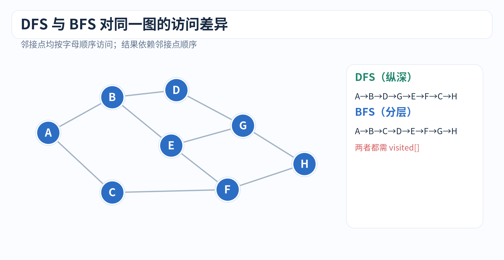
7.3.3 图遍历在路径问题中的应用
课件主要提出两个任务：判断 / 寻找从
- DFS 搜索时遇到目标立即记录路径；回溯时撤销路径末尾结点。注意访问顺序≠实际路径。
- BFS 第一次发现目标时，其
parent[]链可恢复最少边数路径。按“目标→前驱→…→起点”反向追踪，再反转数组。 - 判断两点是否可达可用 DFS 或 BFS。若图可能不连通，必须从指定起点搜索，不能误将另一分量中顶点也视为可达。
复杂度速查： 邻接表上 DFS、BFS 均为 visited、父指针及 BFS 队列空间为
7.4 图的生成树与最小生成树
7.4.1 生成树与最小生成树 MST
在连通无向带权图中，最小生成树（Minimum Spanning Tree，MST）是所有生成树中边权总和最小的一棵。MST 必须覆盖每个顶点，只选择
生成树一般不唯一；最小生成树也不一定唯一（例如出现多条并列权值的边），但其最小总代价是确定的。MST 的边选择结果不是“每个顶点到起点的最短路径树”。
图：最小生成树需要同时满足三项条件
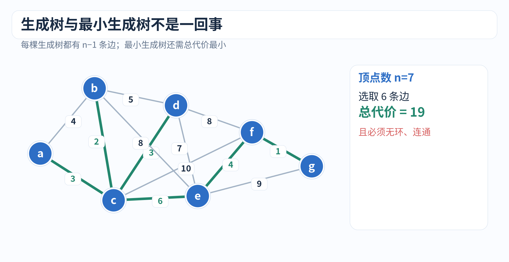
7.4.2 Prim 算法：从一个顶点不断长出树
设
Prim 的关键是跨越两个顶点集合的最小权值边，而不是简单挑当前顶点的最小邻边。课件用 closedge[] 存储尚未加入的顶点到
图：Prim 的割与跨割最小边
Prim 演算第 0 轮
图：Prim 的第 0 个状态
起点设为 a，此时尚未选边。
Prim 演算第 1 轮
图：Prim 的第 1 个状态
本轮增加 a–c，边权 3；累计代价 3，已进入生成树的顶点为 a, c。
Prim 演算第 2 轮
图：Prim 的第 2 个状态
本轮增加 b–c，边权 2；累计代价 5，已进入生成树的顶点为 a, b, c。
Prim 演算第 3 轮
图：Prim 的第 3 个状态
本轮增加 c–d，边权 3；累计代价 8，已进入生成树的顶点为 a, b, c, d。
Prim 演算第 4 轮
图：Prim 的第 4 个状态
本轮增加 c–e，边权 6；累计代价 14，已进入生成树的顶点为 a, b, c, d, e。
Prim 演算第 5 轮
图：Prim 的第 5 个状态
本轮增加 e–f，边权 4；累计代价 18，已进入生成树的顶点为 a, b, c, d, e, f。
Prim 演算第 6 轮
图：Prim 的第 6 个状态
本轮增加 f–g，边权 1；累计代价 19，已进入生成树的顶点为 a, b, c, d, e, f, g。
图：Prim 的 lowcost/adjvex 更新
邻接矩阵版 Prim 的真实 C++ 实现（INF 表示无边，要求简单连通无向网）：
bool prim(const std::vector<std::vector<int>>& weight, int start,
std::vector<std::pair<int, int>>& tree) {
int n = static_cast<int>(weight.size()); // 顶点数
const int INF = 1000000000; // 无边哨兵值
std::vector<int> best(n, INF); // 当前到生成树的最小边权
std::vector<int> parent(n, -1); // 最小边对应的树内顶点
std::vector<bool> inTree(n, false); // 是否已经纳入生成树
tree.clear(); // 清空上一轮结果
best[start] = 0; // 从指定顶点启动
for (int count = 0; count < n; ++count) { // 每轮加入一个顶点
int u = -1; // 当前候选顶点
for (int v = 0; v < n; ++v) { // 遍历尚未加入的顶点
if (!inTree[v] && (u == -1 || best[v] < best[u])) u = v;
}
if (u == -1 || best[u] == INF) return false; // 无法连接，图不连通
inTree[u] = true; // 加入顶点 u
if (parent[u] != -1) tree.push_back({parent[u], u}); // 收录树边
for (int v = 0; v < n; ++v) { // 逐一尝试更新跨割边
if (!inTree[v] && weight[u][v] < best[v]) { // 找到更低代价
best[v] = weight[u][v]; // 更新最小代价
parent[v] = u; // 保存对应树内端点
}
}
}
return true; // 已连通全部顶点
}
7.4.3 Kruskal 算法：从所有边中挑不成环的最小边
Kruskal 先按边权从小到大排序，然后依次取边：若边的两端已经连通，则加入这条边必定形成回路，丢弃；否则合并两个连通分量并保留该边。累计到
图：Kruskal 的边排序及环检测
Kruskal 检查第 1 条边：f–g（权 1）
图：Kruskal 检查 f-g：保留
保留：两个端点还没有通过已选边连接。 本轮已选 1 条边，累计权值 1。
Kruskal 检查第 2 条边：b–c（权 2）
图：Kruskal 检查 b-c：保留
保留：两个端点还没有通过已选边连接。 本轮已选 2 条边，累计权值 3。
Kruskal 检查第 3 条边：a–c（权 3）
图：Kruskal 检查 a-c：保留
保留：两个端点还没有通过已选边连接。 本轮已选 3 条边，累计权值 6。
Kruskal 检查第 4 条边：c–d（权 3）
图：Kruskal 检查 c-d：保留
保留：两个端点还没有通过已选边连接。 本轮已选 4 条边，累计权值 9。
Kruskal 检查第 5 条边：a–b（权 4）
图：Kruskal 检查 a-b：成环舍弃
舍弃：两个端点已有路径相连，加入会成环。 本轮已选 4 条边，累计权值 9。
Kruskal 检查第 6 条边：e–f（权 4）
图：Kruskal 检查 e-f：保留
保留：两个端点还没有通过已选边连接。 本轮已选 5 条边，累计权值 13。
Kruskal 检查第 7 条边：b–d（权 5）
图：Kruskal 检查 b-d：成环舍弃
舍弃：两个端点已有路径相连，加入会成环。 本轮已选 5 条边，累计权值 13。
Kruskal 检查第 8 条边：c–e（权 6）
图：Kruskal 检查 c-e：保留
保留：两个端点还没有通过已选边连接。 本轮已选 6 条边，累计权值 19。
图：并查集识别成环边
Kruskal 最自然的实现工具是并查集：find 查询所属连通分量，merge 合并两个分量。相比遍历图检查环，并查集能高效判断新边是否导致回路。
struct Edge { // 无向带权边
int u, v, weight; // 两端点索引和权值
};
struct DisjointSet { // 并查集结构
std::vector<int> parent; // 保存每个顶点的父结点
explicit DisjointSet(int n) : parent(n) { // 初始化 n 个独立集合
for (int i = 0; i < n; ++i) parent[i] = i;
}
int find(int x) { // 查找代表元素
if (parent[x] != x) parent[x] = find(parent[x]); // 路径压缩
return parent[x]; // 返回集合根
}
bool merge(int a, int b) { // 尝试合并两个分量
a = find(a); // 查询 a 的根
b = find(b); // 查询 b 的根
if (a == b) return false; // 同一分量，加边将成环
parent[a] = b; // 合并不同分量
return true; // 本条边可以被保留
}
};
完整 Kruskal 流程只需对 std::vector<Edge> edges 按 weight 排序，依次运行 if (ds.merge(e.u,e.v))，记录保留边，直到得到
本图组中的两种算法均得到最小权值和
| 比较 | Prim | Kruskal |
|---|---|---|
| 生长方式 | 从一个顶点形成逐渐扩张的树 | 从全图的多个连通分量逐步合并 |
| 每次选择 | 连接 |
全局剩余权值最小的无环边 |
| 常见实现 | 矩阵 + best / 堆 |
边排序 + 并查集 |
| 典型时间 | 矩阵实现 |
|
| 适用倾向 | 稠密图常用矩阵版 | 稀疏图更常用 |
7.5 两点之间的最短路径
课件区分 单源最短路径（一个起点到其余顶点）与 所有顶点对之间的最短路径。带权图中，路径距离是边权之和；若没有任何路径，距离为
7.5.1 Dijkstra：非负边权的单源最短路
维护 dist[v]（目前已发现的起点到 prev[v]（对应路径的前驱）和已确定集合
dist[start]=0，其他顶点初值为。 - 选取未确定且
dist最小的顶点，把它加入 ；选中后其距离不再改变。 - 对从
发出的每条弧 进行松弛：若 dist[u]+w(u,v)<dist[v]，更新dist[v]和prev[v]。 - 重复至待处理集合为空；不可达顶点保持
。
图：带权有向图的单源最短路径问题
Dijkstra 第 0 轮：初始化
图：Dijkstra 第 0 轮距离表
已确定集合：空；本轮初始化全部暂定距离。
Dijkstra 第 1 轮：确定 S
图：Dijkstra 第 1 轮距离表
已确定集合：S；已完成对从 S 发出的边的松弛操作。
Dijkstra 第 2 轮：确定 B
图：Dijkstra 第 2 轮距离表
已确定集合：B, S；已完成对从 B 发出的边的松弛操作。
Dijkstra 第 3 轮：确定 A
图：Dijkstra 第 3 轮距离表
已确定集合：A, B, S；已完成对从 A 发出的边的松弛操作。
Dijkstra 第 4 轮：确定 C
图：Dijkstra 第 4 轮距离表
已确定集合：A, B, C, S；已完成对从 C 发出的边的松弛操作。
Dijkstra 第 5 轮：确定 D
图：Dijkstra 第 5 轮距离表
已确定集合：A, B, C, D, S；已完成对从 D 发出的边的松弛操作。
Dijkstra 第 6 轮：确定 T
图：Dijkstra 第 6 轮距离表
已确定集合：A, B, C, D, S, T；已完成对从 T 发出的边的松弛操作。
图：Dijkstra 的松弛更新
图：Dijkstra 从前驱数组恢复路径
图：负权边使 Dijkstra 贪心前提失效
void dijkstra(const std::vector<std::vector<std::pair<int, int>>>& adj,
int start, std::vector<long long>& dist,
std::vector<int>& prev) {
int n = static_cast<int>(adj.size()); // 顶点个数
const long long INF = 4000000000000000000LL; // 足够大的不可达标记
dist.assign(n, INF); // 初始化距离
prev.assign(n, -1); // 初始化前驱
std::priority_queue<std::pair<long long, int>,
std::vector<std::pair<long long, int>>,
std::greater<std::pair<long long, int>>> pq; // 最小堆：距离、顶点
dist[start] = 0; // 起点距离为零
pq.push({0, start}); // 起点入堆
while (!pq.empty()) { // 处理可达顶点
auto current = pq.top(); // 获取堆内最短候选
pq.pop(); // 弹出该候选
long long d = current.first; // 当前候选距离
int u = current.second; // 当前顶点索引
if (d != dist[u]) continue; // 跳过过时的堆项
for (const auto& edge : adj[u]) { // 枚举从 u 发出的弧
int v = edge.first; // 弧头
int w = edge.second; // 非负权值
if (dist[u] + w < dist[v]) { // 找到更短路线
dist[v] = dist[u] + w; // 更新最短暂定距离
prev[v] = u; // 保存路径前驱
pq.push({dist[v], v}); // 把新候选加入堆
}
}
}
}
此版本需要 <vector>、<queue>、<utility>、<functional>。边权必须非负；堆可能存有同一顶点的旧条目，故用 d != dist[u] 跳过。采用邻接表与二叉堆，典型复杂度为
7.5.2 Floyd：求所有顶点对的最短路
Floyd 算法的关键不是选择某条最近的边，而是逐步放宽允许经过的中间顶点范围。设
其含义：
图：Floyd 中转顶点更新的直观含义
Floyd 距离矩阵状态 0/4
图：Floyd 初始
此状态对应初始直接边距离。
Floyd 距离矩阵状态 1/4
图：Floyd 允许经过 A
此状态对应将顶点 A 作为允许中转顶点之后的最短距离。
Floyd 距离矩阵状态 2/4
图：Floyd 允许经过 B
此状态对应将顶点 B 作为允许中转顶点之后的最短距离。
Floyd 距离矩阵状态 3/4
图：Floyd 允许经过 C
此状态对应将顶点 C 作为允许中转顶点之后的最短距离。
Floyd 距离矩阵状态 4/4
图：Floyd 允许经过 D
此状态对应将顶点 D 作为允许中转顶点之后的最短距离。
void floyd(std::vector<std::vector<long long>>& d) {
int n = static_cast<int>(d.size()); // 顶点数量
const long long INF = 4000000000000000000LL; // 约定的无路径标记
for (int k = 0; k < n; ++k) { // 依次允许 k 作中转点
for (int i = 0; i < n; ++i) { // 枚举起点
for (int j = 0; j < n; ++j) { // 枚举终点
if (d[i][k] == INF || d[k][j] == INF) continue; // 不可中转
if (d[i][k] + d[k][j] < d[i][j]) { // 找到更短路线
d[i][j] = d[i][k] + d[k][j]; // 更新距离
}
}
}
}
}
初始化时 d[i][i]=0；没有直接边记 INF；有直接边记边权。时间复杂度 d[i][i]<0 识别负环影响。
7.6 拓扑排序
7.6.1 AOV 网络与先后依赖
AOV 网（Activity On Vertex） 用顶点表示活动，用有向边表示活动的优先关系；例如“先学程序设计基础，再学数据结构”，箭头就从先修课程指向后续课程。拓扑序列是顶点的一种线性排序：对每条
拓扑排序仅对**有向无环图（DAG）**能输出全部顶点。一张 DAG 可能存在多个合法拓扑序列，具体结果取决于同一轮如何选择多个零入度顶点。
图：课程/工程先决关系组成 DAG
图：一个 DAG 可以对应多个拓扑序列
7.6.2 基于入度的拓扑排序
课件的基本操作：
- 找到一个入度为 0 的顶点（当前没有未完成前驱）。
- 输出该顶点；从图中删除它的所有出弧，等价于将各后继入度减 1。
- 重复直到全部输出；若还有顶点却找不到零入度点，则存在有向环。
画图示例为便于核对，有多个可选顶点时按字母序取最小的。
拓扑排序状态 0/8
图：拓扑排序第 0 个状态
初始零入度顶点为 A、B，可任取一个；图组按照字母序先取 A。
拓扑排序状态 1/8
图：拓扑排序第 1 个状态
删除本轮输出顶点及其出弧，检查是否出现新的零入度顶点。
拓扑排序状态 2/8
图：拓扑排序第 2 个状态
删除本轮输出顶点及其出弧，检查是否出现新的零入度顶点。
拓扑排序状态 3/8
图：拓扑排序第 3 个状态
删除本轮输出顶点及其出弧，检查是否出现新的零入度顶点。
拓扑排序状态 4/8
图：拓扑排序第 4 个状态
删除本轮输出顶点及其出弧，检查是否出现新的零入度顶点。
拓扑排序状态 5/8
图：拓扑排序第 5 个状态
删除本轮输出顶点及其出弧，检查是否出现新的零入度顶点。
拓扑排序状态 6/8
图：拓扑排序第 6 个状态
删除本轮输出顶点及其出弧，检查是否出现新的零入度顶点。
拓扑排序状态 7/8
图：拓扑排序第 7 个状态
删除本轮输出顶点及其出弧，检查是否出现新的零入度顶点。
拓扑排序状态 8/8
图：拓扑排序第 8 个状态
所有顶点均成功输出，说明该图不存在有向环。
图：拓扑排序的有向环检测
真实 C++ 实现：使用一个小根堆存放当前零入度顶点，使示例中的优先次序可复现。若不需要字母序约束，普通栈或队列也可以。
bool topologicalSort(const std::vector<std::vector<int>>& adj,
std::vector<int>& order) {
int n = static_cast<int>(adj.size()); // 顶点数量
std::vector<int> indegree(n, 0); // 每个顶点的入度
for (int u = 0; u < n; ++u) { // 枚举所有出弧
for (int v : adj[u]) ++indegree[v]; // 弧头入度加一
}
std::priority_queue<int, std::vector<int>,
std::greater<int>> ready; // 取编号最小的零入度点
for (int i = 0; i < n; ++i) { // 初始化候选顶点
if (indegree[i] == 0) ready.push(i); // 零入度顶点入堆
}
order.clear(); // 清空输出序列
while (!ready.empty()) { // 仍有可执行的活动
int u = ready.top(); // 选择一项无前驱活动
ready.pop(); // 从候选中删除
order.push_back(u); // 输出顶点
for (int v : adj[u]) { // 删除 u 的所有出弧
--indegree[v]; // 后继顶点入度减一
if (indegree[v] == 0) ready.push(v); // 新的零入度点入堆
}
}
return static_cast<int>(order.size()) == n; // 输出不足 n 则有环
}
需要 <vector>、<queue>、<functional>。课件使用栈存零入度顶点，时间复杂度为
7.7 关键路径（AOE 网）
7.7.1 AOE 与 AOV 的区别
AOE 网（Activity On Edge） 使用边/弧表示活动，顶点表示活动衔接时的事件，弧权表示活动的持续时间。对于从源点到汇点的工程网络，整体工程要等所有必须完成的先行活动结束，因此：
这里的“最短工期”对应图论的“最长路径”，原因是并行活动可以同时进行，最晚完成的依赖链决定整体完工时刻。
图：AOE 工程网络的活动与事件
7.7.2 事件的最早发生时间 ve：正向取最大值
设弧
每个事件必须等待全部前驱活动完成，所以取最大值，而不是最小值。
最早发生时间正向演算 0/7
图：事件最早发生时间第 0 步
初始把源点的最早时间设为 0，其余为待定。
最早发生时间正向演算 1/7
图：事件最早发生时间第 1 步
按拓扑序逐步处理事件 S，并用“前驱 ve + 活动持续时间”的最大值更新后继事件。
最早发生时间正向演算 2/7
图：事件最早发生时间第 2 步
按拓扑序逐步处理事件 A，并用“前驱 ve + 活动持续时间”的最大值更新后继事件。
最早发生时间正向演算 3/7
图：事件最早发生时间第 3 步
按拓扑序逐步处理事件 B，并用“前驱 ve + 活动持续时间”的最大值更新后继事件。
最早发生时间正向演算 4/7
图：事件最早发生时间第 4 步
按拓扑序逐步处理事件 C，并用“前驱 ve + 活动持续时间”的最大值更新后继事件。
最早发生时间正向演算 5/7
图：事件最早发生时间第 5 步
按拓扑序逐步处理事件 D，并用“前驱 ve + 活动持续时间”的最大值更新后继事件。
最早发生时间正向演算 6/7
图：事件最早发生时间第 6 步
按拓扑序逐步处理事件 E，并用“前驱 ve + 活动持续时间”的最大值更新后继事件。
最早发生时间正向演算 7/7
图：事件最早发生时间第 7 步
按拓扑序逐步处理事件 T，并用“前驱 ve + 活动持续时间”的最大值更新后继事件。
7.7.3 事件的最迟发生时间 vl：逆向取最小值
首先确定工程总工期
它描述在不延误整体工期时，事件最迟能发生的时间。每个后继活动都形成一个不能逾越的最迟开始约束，因此取最小值。
最迟发生时间逆向演算 0/7
图：事件最迟发生时间第 0 步
初始化汇点最迟时间等于总工期，其余项尚未计算。
最迟发生时间逆向演算 1/7
图：事件最迟发生时间第 1 步
此步骤按逆拓扑序更新本事件的最迟允许时刻；尚未求出的项暂以“待定”表示。
最迟发生时间逆向演算 2/7
图：事件最迟发生时间第 2 步
此步骤按逆拓扑序更新本事件的最迟允许时刻；尚未求出的项暂以“待定”表示。
最迟发生时间逆向演算 3/7
图：事件最迟发生时间第 3 步
此步骤按逆拓扑序更新本事件的最迟允许时刻；尚未求出的项暂以“待定”表示。
最迟发生时间逆向演算 4/7
图：事件最迟发生时间第 4 步
此步骤按逆拓扑序更新本事件的最迟允许时刻；尚未求出的项暂以“待定”表示。
最迟发生时间逆向演算 5/7
图：事件最迟发生时间第 5 步
此步骤按逆拓扑序更新本事件的最迟允许时刻；尚未求出的项暂以“待定”表示。
最迟发生时间逆向演算 6/7
图：事件最迟发生时间第 6 步
此步骤按逆拓扑序更新本事件的最迟允许时刻；尚未求出的项暂以“待定”表示。
最迟发生时间逆向演算 7/7
图：事件最迟发生时间第 7 步
此步骤按逆拓扑序更新本事件的最迟允许时刻；尚未求出的项暂以“待定”表示。
7.7.4 活动的最早/最迟开始时间与时差
对于弧
若时差为 0，该活动为关键活动；由关键活动连成的源点到汇点最长路径称为关键路径。
下表为本组自拟 AOE 示例的计算结果：
| 事件 | S | A | B | C | D | E | T |
|---|---|---|---|---|---|---|---|
| 最早 |
0 | 4 | 3 | 8 | 8 | 11 | 16 |
| 最迟 |
0 | 4 | 5 | 8 | 10 | 11 | 16 |
因此工程最短工期为 16，关键路径为 S→A→C→E→T，关键弧的时差均为 0。
图：各活动的总时差比较
图：AOE 网的关键活动与关键路径
7.7.5 多条关键路径及缩短工期的误区
项目同时存在多条最长路径时，只缩短其中一条而另一条仍保持原长度，工期未必会变短。因此要分析全部关键路径，找出共同关键活动，或同时缩短每条关键路径中的某些活动。加速后应重新计算，因为原本非关键的路径可能变成新的关键路径。
图：多条关键路径与工期缩短限制
7.7.6 关键路径算法的执行顺序
- 拓扑排序：先确定图无环，并得到合法拓扑序。
- 正向递推
ve：对每条弧更新 ve[v] = max(ve[v], ve[u]+w)。 - 逆拓扑序递推
vl：把汇点设为，再更新 vl[u] = min(vl[u], vl[v]-w)。 - 对每条活动求
、 与时差；时差为 0 者是关键活动。
下面给出拓扑序已经由拓扑排序得到、且工程仅有一个源点和一个汇点、全部事件位于源点到汇点路径上的情况下的核心计算函数。写成函数而非整份超长程序，便于对照步骤。
void calculateEventTimes(
const std::vector<std::vector<std::pair<int, int>>>& adj,
const std::vector<int>& topo, int sink,
std::vector<long long>& ve, std::vector<long long>& vl) {
int n = static_cast<int>(adj.size()); // 事件数量
ve.assign(n, 0); // 初始化最早时间
for (int u : topo) { // 按拓扑顺序正向计算
for (const auto& edge : adj[u]) { // 每条出弧代表一个活动
int v = edge.first; // 弧头事件
int duration = edge.second; // 活动持续时间
ve[v] = std::max(ve[v], ve[u] + duration); // 等齐所有前驱才发生
}
}
long long total = ve[sink]; // 工程总工期
vl.assign(n, total); // 最迟事件时间初值
for (auto it = topo.rbegin(); it != topo.rend(); ++it) { // 逆拓扑顺序回推
int u = *it; // 当前事件
for (const auto& edge : adj[u]) { // 查看后继活动约束
int v = edge.first; // 后继事件
int duration = edge.second; // 活动持续时间
vl[u] = std::min(vl[u], vl[v] - duration); // 不延误后继的最迟时间
}
}
}
此代码需要 <vector>、<utility>、<algorithm>；若工程存在多源点、多汇点或不可达事件，需先按工程建模规则加入必要的虚拟源点/汇点，不能直接使用上述简化的初始化方式。
本章知识对照与复习速查
| 问题 | 应考虑的算法 | 核心数据结构 | 图的限制 | 主要复杂度（常见实现） |
|---|---|---|---|---|
| 从起点尽量走深并遍历 | DFS | 递归栈 / 显式栈 | 普通图即可 | 邻接表 |
| 分层遍历，找无权最少边路径 | BFS | 队列 | 普通无权图 / 等权图 | 邻接表 |
| 连接所有顶点、总代价最小 | Prim | best / 最小堆 |
连通无向带权图 | 矩阵 |
| 连接所有顶点、按边权排序 | Kruskal | 边排序、并查集 | 连通无向带权图 | |
| 从一点求各点最短路 | Dijkstra | 距离表、最小堆 | 无负权边 | 常用堆版本约 |
| 求所有点对最短路 | Floyd | 距离矩阵 | 无相关负权回路 | |
| 安排课程或工程先后顺序 | 拓扑排序 | 入度表、栈/队列 | 有向无环图 | |
| 计算工期、寻找关键活动 | 关键路径 | 拓扑序、ve、vl |
AOE 有向无环网络 |
课件作业与练习方向
课件最后列出：7.22、7.27 为作业，7.25 为思考题。保留其核心训练目标：
- 7.22：针对邻接表存储的有向图，实现判断从顶点
到 是否存在路径（ ），适合以 DFS/BFS 可达性搜索实现。 - 7.27：针对邻接表存储的无向图，判断任意给定两顶点之间是否存在长度为
的简单路径。这里必须防止路径顶点重复，而且不能把普通 BFS 的最短路结果直接当成“恰好长度为 的简单路径”。 - 7.25：判断有向图是否存在回路；可以尝试拓扑排序输出数目检测法，或 DFS 三色标记法。
资料标识： 《数据结构》第七章，讲义共 152 页；本文件依据《知识整理 Skills（4.3）》进行教学化重组，配套插图均为原创绘制的独立教学示例。未直接复制课件原始插图。